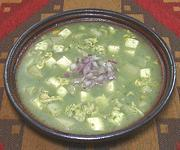

|
Green SoupPeru - Chupe Verde | ||||
| Makes: Effort: Sched: DoAhead: |
11 cups *** 2 hrs Most |
This popular soup is typical of Huancayo in west central Peru. The flavor is unique due to the large amount of herbs, including some exotics. If doing ahead, see Note-7 | |||
|
2 3 2 1/2 1/2 6 2 ----- 1/4 1/4 1/4 2 2 2 4 1/2 3/4 ----- 3 6 1/2 1/2 1/2 |
# oz cl c c oz lrg ---- c c c T c ---- T c T t c |
Potatoes (1) Onion Garlic Lima Beans (2) Corn Kernels (2) Queso Fresco (3) Eggs -- Herbs Parsley, flat Cilantro Scallion greens Muña sprig (3) Epezota sprig (4) Rue sprig (5) Spearmint sprig Huacatay paste (6) Water ----------- Olive Oil Water Salt Pepper, black Milk |
Prep - (1 hr)
|